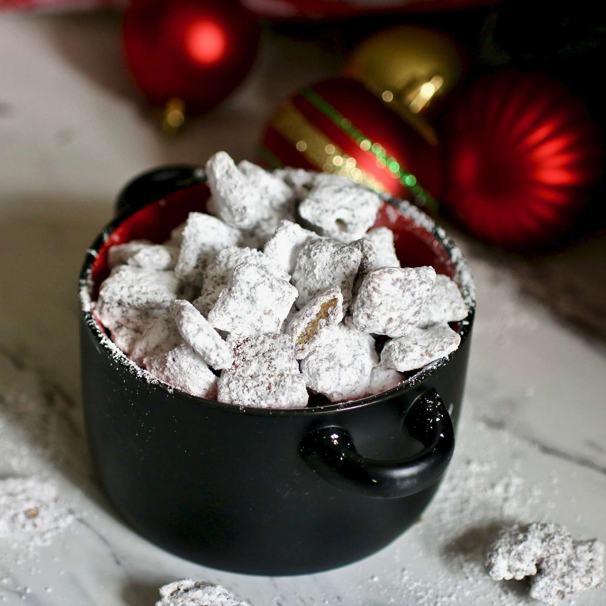

Chex Muddy Buddies

Description
Muddy buddies is an easy no-bake sweet and crunchy cereal snack mix. Another popular name for this favorite mix is puppy food.
Chow down — it's doggone good! Store muddy buddies in an airtight container in the refrigerator.
Ingredients
- 3 cups Rice Chex® cereal
- 3 cups Corn Chex® cereal
- 3 cups Chocolate Chex® cereal
- 1 cup semisweet chocolate chips
- 1/2 cup peanut butter
- 1/4 cup butter or margarine
- 1 teaspoon vanilla
1 1/2 cups powdered sugar
Steps
- Combine all cereals in a large bowl; set aside.
- Place chocolate chips, peanut butter, and butter in a 1-quart microwave-safe bowl. Microwave, uncovered, on high for 1 minute, then stir. Continue warming mixture until smooth and combined, about 30 seconds longer. Stir in vanilla.
- Pour chocolate mixture over cereal and stir until evenly coated. Transfer to a 2-gallon resealable plastic bag.
- Add powdered sugar to the bag and seal; shake until well-coated. Evenly spread cereal out onto waxed paper to cool.